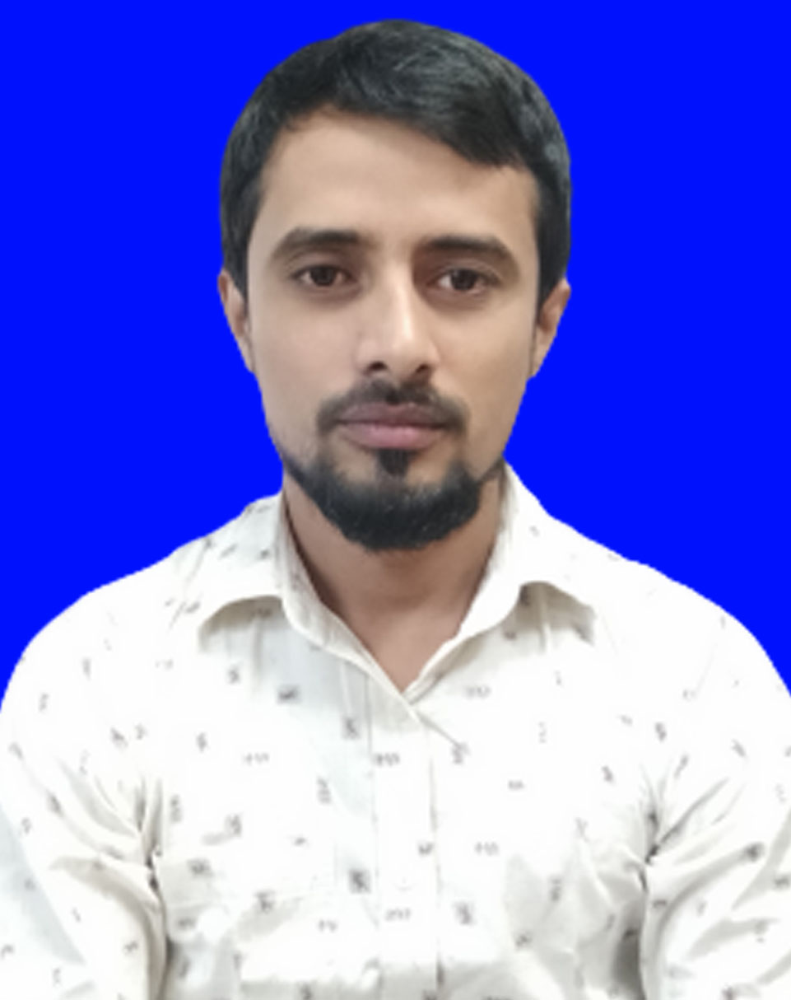

Career Objective
To be a Freelancer as Web Developer and work with renowned organization and grow rapidly with increasing responsibilities
Career Summary
Around 6 years experienced Compliance, HR, Admin & Welfare professional with
having expertise on Manpower Planning, Job Description, Policy
Development, Compensation Management, Training & Development,
Social Compliance Audit, Technical Audit, Administration Management
and Transportation Management.
Working Experience
Officer – HR & Admin,
Onirban Tex
January 2015 to December 2017
Core Functions:
- General HR Operation
- Manpower Planning
- HR Policies & Procedures
- Recruitment & Selection
- Employee Engagement
- Social Compliance / Ethical Standards Audit
Education
- Master of Science (Msc)
Dhaka College Dhaka
Passing Years: 2011
Result: First Class
Communication Skill
- Excellent organizational and interpersonal skills.
- Friendly, enthusiastic & persuasive by nature.
- Excellent communication skills and professional demeanour gained through extensive interaction with the high officials, students & leadership roles in University Department.
- Unique combination of creativity and analytical skills with high economic and analytical aptitude and detail orientation.
- Recognized for reliability and “getting the task done” through persistent and strong work ethic.
Personal Information
- Name:Md. Ruhul Amin
Father Name: Md. Abul Kalam Azad
Mother Name: Lily Begum
Date of Bitrh: 15/05/1988
Permanent address: Pukurpar, Shahzadpur, Sirajganj
Present Address: Jarun, Konabari, Gazipur
Gender: Male
Marital Status: Married
Religion: Islam
Signature